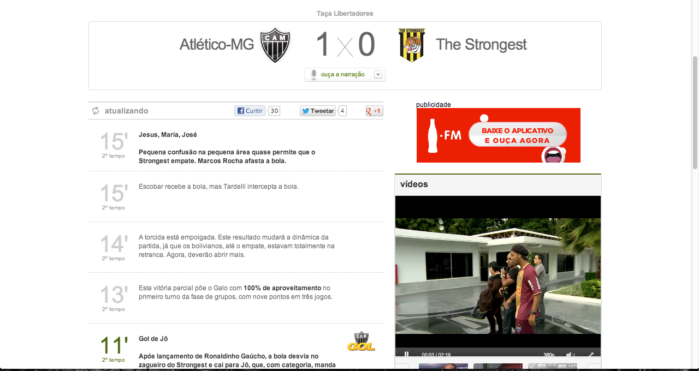
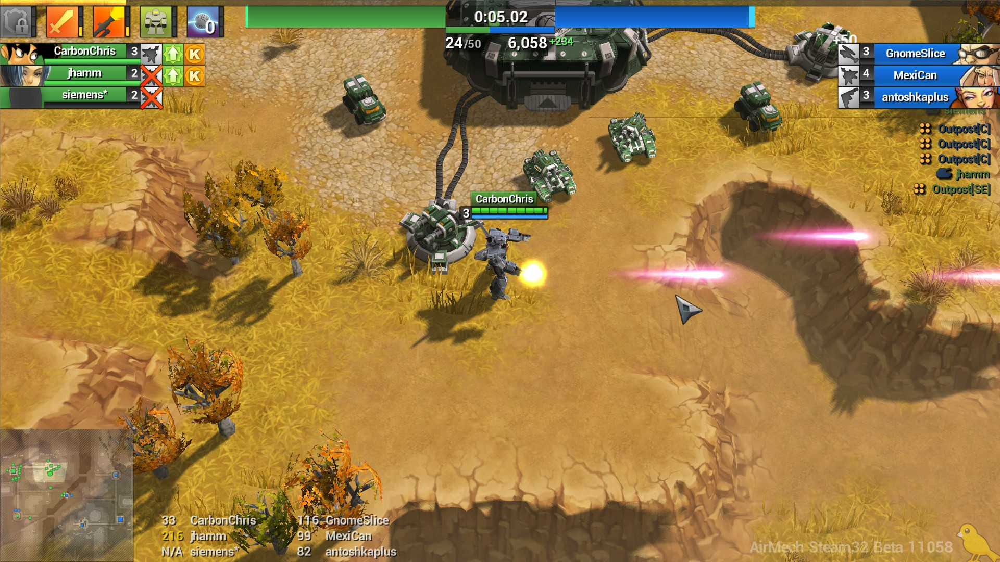
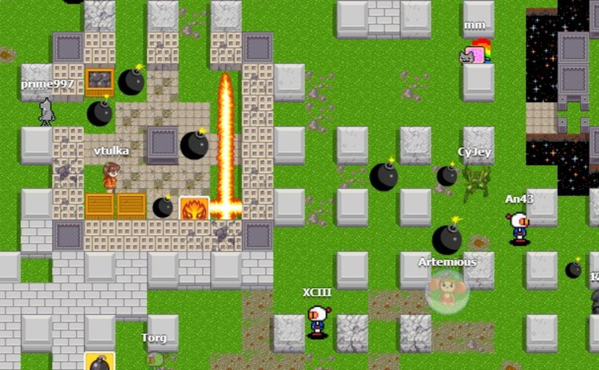

Realtime
com AngularJS e Socket.IO
By Ciro Nunes / @cironunesdev
Acompalhe os slides em http://cironunes.realtime-presentation.jit.su
Agenda
- O que são apps realtime e como desenvolvê-las
- Porque estas tecnologias e uma breve introdução
- Hands On :)
Oi, eu sou o Ciro!
Front end Engineer, Agile Coach
Aplicações realtime?
O servidor compartilha seu estado atual com todos os clientes conectados
Tempo real (Globo Esporte)
AirMech
Borbermine
O que torna isso possível?
Web Sockets
Conexão persistente entre o browser e o servidor
Socket.IO?
O objetivo do Socket.IO é tornar aplicações realtime possíveis em qualquer browser e dispositivo móvel
Cross-browser Websocket
100% JavaScript
NodeJS
Como usar
com o Express
Configurando o Package.json
{
"name": "Realtime app",
"description": "Awesome realtime with AngularJS and Socket.IO",
"version": "0.0.1",
"private": true,
"dependencies": {
"express": "3.x",
"socket.io": "0.9.x"
}
}
Instalando as dependências
$ npm install
Servidor
var express = require('express'),
app = express(),
server = require('http').createServer(app),
io = require('socket.io').listen(server);
app.configure(function() {
app.use(express.static(__dirname + '/public'));
});
io.sockets.on('connection', function (socket) {
socket.emit('news', { hello: 'world' });
socket.on('my other event', function (data) {
console.log(data);
});
});
server.listen(3000);
Cliente
var socket = io.connect();
socket.on('news', function (data) {
console.log(data);
socket.emit('my other event', { my: 'data' });
});
Rodando a aplicação
$ node app.js
 ?
?
HTML para aplicações web!
Incríveis features
Modularização
Data binding
Dependency injection
Testabilidade
Hello, {{name}}
Digite seu nome
View
<div ng-controller="HelloApp">
<h1>Hello, {{ name }}</h1>
<p>Digite seu nome</p>
<input type="text" ng-model="newName">
<button ng-click="action()">OK</button>
</div>
Controller
function HelloApp($scope) {
$scope.name = 'World';
$scope.action = function() {
$scope.name = $scope.newName;
}
}
Testando
it('should change the name on action', function() {
expect(scope.name).toBe('World');
scope.newName = 'FAKENAME';
scope.action();
expect(scope.name).toBe('FAKENAME');
});
Angular MVC

Realtime Chat
- {{ message.time }} {{ message.username }}: {{ message.message }}
Realtime! :D

Servidor com Socket.IO
io.sockets.on('connect', function(socket) {
socket.on('send:message', function(data) {
var d = (new Date()).toString(),
time = d.match(/\d+:\d+/)[0];
// create new message
var message = {
username: data.username,
message: data.message,
time: time
};
// broadcast new data to connected clients
socket.broadcast.emit('send:message', message);
});
});
View
<div ng-controller="helloSocketCtrl">
<h2>Realtime Chat</h2>
<ul>
<li ng-repeat="message in messages">
<small>{{ message.time }}</small>
<strong>{{ message.username }}:</strong>
<span>{{ message.message }}</span>
</li>
</ul>
<form ng-submit="sendMessage()">
<input type="text" ng-model="name" placeholder="Nome" required>
<input type="text" ng-model="message" placeholder="Mensagem" required>
<button>Enviar!</button>
</form>
</div>
Socket service
Encapsulando o Socket.IO em um serviço do AngularJS
var app = angular.module('myApp', []);
app.factory('socket', function($rootScope) {
var socket = io.connect();
return {
on: function(eventName, callback) {...},
emit: function(eventName, data, callback) {...}
}
});
Usando o service "socket" no Controller
app.controller('MainCtrl', function($scope, socket) {
// listen for server side socket.emit('send:message')
socket.on('send:message', function(message) {
// use AngularJS data binding to update the view with new data
$scope.messages.push(message);
});
$scope.messages = [];
$scope.sendMessage = function() {
var d = (new Date()).toString(),
time = d.match(/\d+:\d+/)[0];
var message = {
username: $scope.userName,
message: $scope.message,
time: time
};
socket.emit('send:message', message);
$scope.messages.push(message);
}
});